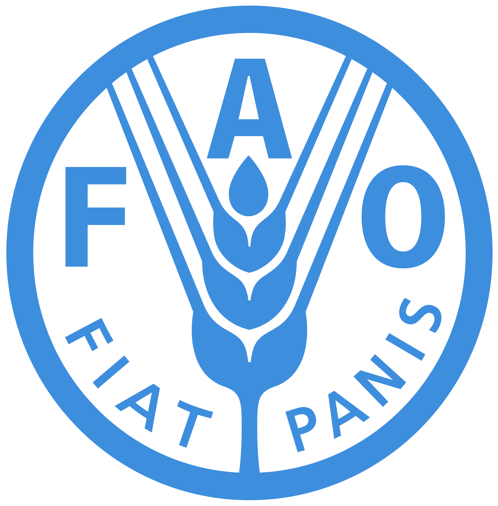

Agriculture, forestry, and fisheries
Biomass Energy Feedstock Library – compositions of many different agricultural feedstocks (includes % glucane from cellulose and starch, % xylan, % lignin, % total ash, % protein)
- Web: https://bioenergylibrary.inl.gov/Home/Home.aspx
- Additional notes: Dr. Nelson has these data in a spreadsheet; contact her directly if you would like to use these data here.

FAOSTAT - food and agriculture data (huge variety) for over 245 countries and territories
- Spatial resolution: country
- Temporal resolution: annual, 1961-2017 and covers all FAO regional groupings from 1961 to the most recent year available
- Web: http://www.fao.org/faostat/en/#data
- Additional notes: Datasets in FAOSTAT include crop,livestock, and forestry production, agricultural inputs, agricultural emissions, and a large suite of agri-environmental indicators (fertilizer, pesticides, temperature change, etc.), among others.
North Carolina Department of Agriculture & Consumer Service’s Agricultural Water Use Data – agricultural water use data in gallons
- Spatial resolution: state
- Temporal resolution: monthly
- Web: http://www.ncagr.gov/stats/environmental/index.htm
- Additional notes: data are in PDF reports

NOAA Fisheries Annual Commercial Landings – total annual landings of commercial fish and shellfish species in the US in terms of dollars and pounds
- Spatial resolution: state (or all of US)
- Temporal resolution: annual
- Web: https://www.st.nmfs.noaa.gov/commercial-fisheries/commercial-landings/annual-landings-with-group-subtotals/index

USDA Census of Agriculture – a comprehensive summary of agricultural activity in the US
- Spatial resolution: state, county, watershed, American Indian reservation
- Temporal resolution: every 5 years, 1840-2012
- Web: https://www.agcensus.usda.gov/Publications/2012/
https://www.nass.usda.gov/Data_and_Statistics/index.php - Additional notes: Includes “Special Studies,” such as the 2013 Census of Aquaculture and 2013 Farm and Ranch Irrigation Survey, among others
USDA Long-Term Agricultural Projections – expected changes in a variety of US commodities through 2027
- Spatial resolution: nation
- Temporal resolution: 2017-2027
- Web:http://usda.mannlib.cornell.edu/MannUsda/viewDocumentInfo.do?documentID=1192
USDA World Agricultural Supply and Demand Estimates – estimated supply and demand for a variety of commodities Spatial resolution: US and world
- Temporal resolution: annual
- Web: https://www.usda.gov/oce/commodity/wasde/index.htm
- Additional notes: The data are divided onto multiple sheets in the Excel file
USDA Forest Service Forest Health – forest acres damaged (defoliation and mortality) by pests across the US Spatial resolution: state or region
- Temporal resolution: annual, 2013-2016
- Web: https://foresthealth.fs.usda.gov/portal/PestSummary/DamageSummary